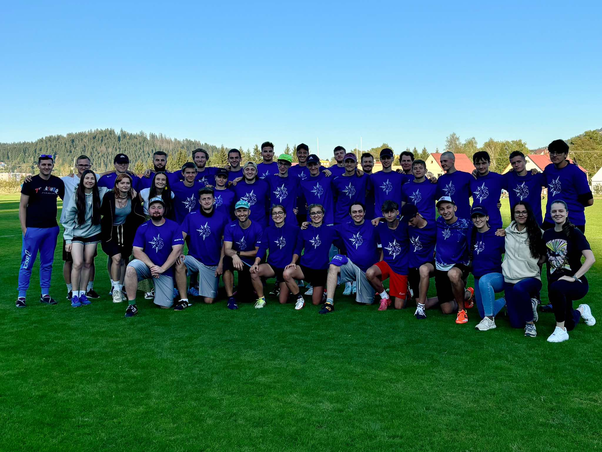

Tréner B-tímu
Pôsobil som ako tréner nášho B-tímu, ktorý bol tvorený najmä mladými hráčmi, nováčikmi a ženami. Bola to dôležitá skúsenosť v oblasti vedenia a rozvoja talentov.
Zakladateľ Klubu
Bez tohto človeka by klub North Side nikdy nevznikol. Jeho odhodlanie a vízia stáli pri zrode a prvých krokoch našej komunity.
MSR-O 2024
Šlo o majstrovstvá Slovenska v športe ultimate frisbee v kategórií Open. Tento turnaj priniesol skvelú konkurenciu, výnimočnú atmosféru a mnoho nových skúseností pre celý tím.
Trenér A-tímu
Bol trénerom A-tímu, ktorý mal ambíciu bojovať o medailové umiestnenia. Jeho vedenie a príprava posúvali tím k lepším výsledkom.
Turzovka
Turnaj sme organizovali priamo v našom rodnom meste Turzovka, kde klub aj vznikol. Bolo to významné podujatie, ktoré upevnilo naše miesto na športovej mape.